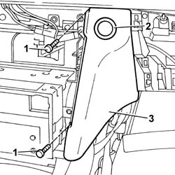

7040A19 RIGHT dashboard LOWER TRIM - R.R.
- Path
- Procedures > 70 FITTINGS > 7040 BODY INTERIOR UPHOLSTERY AND TRIM > 7040A PASSENGER COMPARTMENT TRIMS > 7040A19 RIGHT dashboard LOWER TRIM - R.R.
- Kind
- repair procedure (removal / refitting; the operation number is the code)
- Applies to
- all engines; all production periods
- Interactive page
- https://sloeber94.github.io/elrnDB-lThss/en/#/126584
Applies to: all engines; all production periods
 Removing
Removing
 Refitting
Refitting- Open the boot and disconnect the negative battery terminal.
- [5580P26]
- [7040G20]
See in Op. 7040A31 Compartment in dashboard - R.R.
1. Undo the bolts fixing the trim.
2. Release the compartment opening switch ring nut.
3. Remove the trim.

Applies to: all engines; all production periods
Refitting
Removing- Fit the trim tightening the fixing bolts.
- Position the ring nut on the compartment opening switch.
- [5580P26]
See in Op. 7040A31 Compartment in dashboard - R.R.
- [7040G20]
- Connect the negative battery terminal.